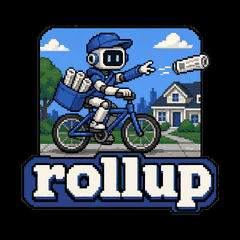

Rollup
A bounded briefing from mail you already keep.
Read newsletters from your Thunderbird mbox — plus optional LinkedIn, Reddit, and saved pages — and write a calm periodic digest. Mail stays read-only. Inference stays yours.
The briefing, not another stream
Thunderbird owns the ongoing stream. Rollup takes a time window and produces a finite reading object — Markdown, HTML, and optional EPUB / e-ink. It is not an RSS reader.
Digest
Classify, group, and summarise a lookback window. Default run uses preview excerpts and makes no network calls.
Local web UI
Loopback Flask extra: Archive, Run Studio, Settings, Articles, LinkedIn, Reddit, and Admin — same TOML and SQLite as the CLI.
Optional sources
LinkedIn, Reddit, and webpage capture are ingest transports for that window, not inboxes. Credentials never live in TOML.
Local AI, when you want it
Pass --ollama for local summaries. Final-review QA
is independent. Default digest stays offline.
What can I do with it?
- Turn a week of newsletters into one bounded digest
- Browse the archive in a loopback web UI
- Schedule unattended runs with launchd or cron
- Fold in LinkedIn, Reddit, or saved articles at digest time
- Write Markdown, HTML, EPUB, or e-ink artifacts
Walkthrough: examples. Not sure if this is the right tool? product contract · comparison.
On your machine
Rollup never writes, deletes, or renames anything under your mail root. Output, state, and logs stay outside the store. The default digest performs no network calls. The web UI binds loopback and is single-user.
From a checkout to a digest
-
Install into a venv with the web extra and confirm
rollup doctoris clean. -
Run
rollup digestover your Thunderbird mbox (preview summaries, no network). -
Open
rollup web --openand browse the archive on loopback. -
Optionally pass
--ollama, schedule withrollup cron print-launchd, or add LinkedIn / Reddit / articles.
Install
Python 3.10+. Thunderbird mbox (not Maildir). No Ollama server for the default digest.
git clone https://github.com/glen-w/rollup.git
cd rollup
python3 -m venv .venv && source .venv/bin/activate
pip install -e ".[web]"
rollup digest
rollup web --openOpen http://127.0.0.1:8765 (loopback). Docker: see Docker.
Details: Documentation · README